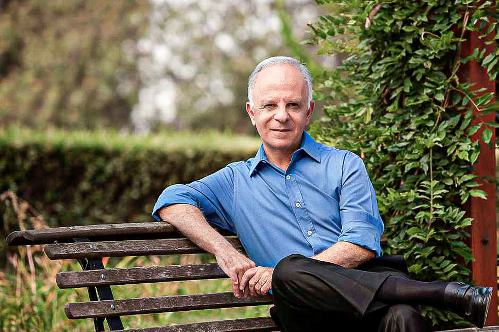

Nossa História
Em 1977, o farmacêutico Miguel Krigsner se instalou em uma portinha, numa rua secundária de Curitiba. Chamou a pequena farmácia de manipulação de o Boticário e descobriu pouco a pouco que seu verdadeiro amor eram os cosméticos. Os primeiros que criou foram um creme à base de colágeno, um creme de elastina para estrias, um xampu e um banho de algas marinhas. Logo veio o primeiro perfume. Vendido em um frasco em formato de ânfora, a fragrância trazia uma mistura inusitada de ingredientes. Em 1982, O Boticário abriu sua primeira indústria que contava com 27 funcionários. Hoje são aproximadamente vinte e dois mil colaboradores. Foi assim, a partir do sonho de um apaixonado, que teve início a jornada desta marca.